Not sure? Start with a Customer account. Don’t choose Driver, Business, or Administrator unless that describes your role and you have followed the required approval or assignment process.
Driver and business accounts need administrator approval before their dedicated workspaces become available. While approval is pending, sign-in takes you to the customer experience.
Quick-start checklist
Choose the role that matches what you will do.
Have access to the email address you register with.
Allow location access when booking trips or using nearby/map features.
Confirm your role-specific home screen after signing in.
Open TrikeServeUse the web app on your phone or computer. Allow location access when you want nearby options or location-based ride features.
Sign in or create an accountUse your email and password. Choose the appropriate account role during sign-up.
Go to your home screenAfter sign-in, TrikeServe opens the workspace for your active role. Follow the matching guide below.
02 · ACCOUNTS & ACCESS
Choose the right account
Your role controls the tools available to you. Use your own account; don’t share sign-in details.
Account
Best for
Access notes
Customer
Booking rides, browsing restaurants, ordering food, checking activity and messages.
Standard account; sign up and verify your email if prompted.
Driver
Setting availability, viewing requests, completing rides and reviewing earnings.
Requires administrator approval; until approved, the customer workspace is shown.
Business
Managing a restaurant profile, menu, incoming orders and order progress.
Requires administrator approval; pending accounts can use the customer workspace while waiting.
Administrator
Managing platform users, approvals, TODA terminals, fares and settings.
Access is assigned. Some administrators are scoped to a terminal or assigned responsibilities.
Approval is not the same as sign-up.
Submitting a driver or business application does not immediately unlock its dedicated dashboard. Contact your platform administrator if your application is pending.
03 · ACCESS YOUR ACCOUNT
Sign in or join
Keep your email current so you can receive verification and account messages.
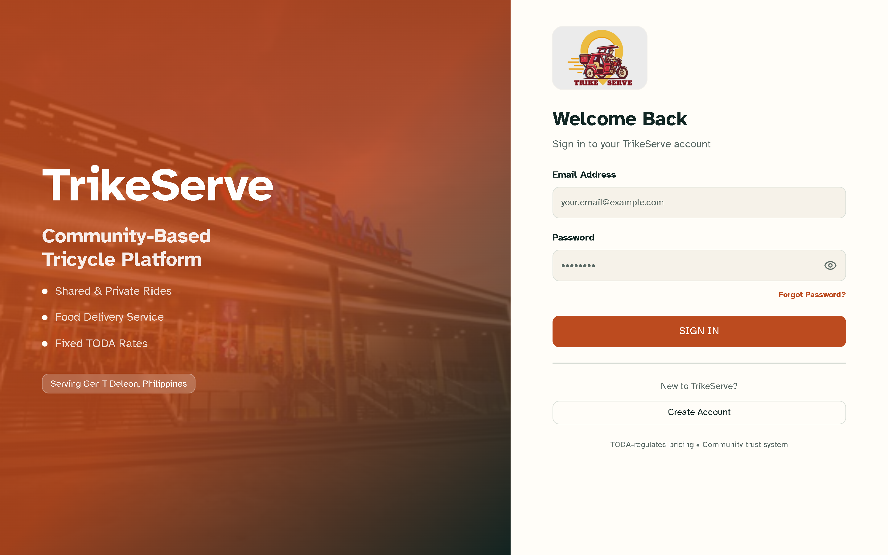
Sign inEnter your email and password in the sign-in fields, then select Sign In. Use Forgot Password? if you need to reset your password.
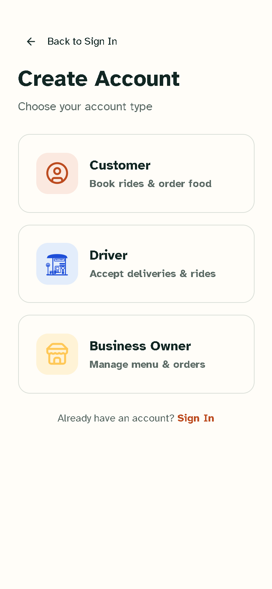
Create an accountChoose your role in the account-type selector, complete the required fields, then select the sign-up button. Driver and Business applications need approval.
Enter your email and passwordCheck for typing errors and use the password associated with this account.
Verify your email if askedLook for the verification message in your inbox and spam folder. The sign-in screen may offer a resend option.
Need a reset?Select Forgot Password? and follow the instructions sent to your email.
Developer/test account shortcuts may be available only in a development build. Never treat a test account as your personal account, and never share passwords or access codes.
FOR PASSENGERS & FOOD LOVERS
Customer guide
Arrange a local trip, discover nearby food, and keep track of what you’ve requested.
Your home screen
Start from the customer home page. Choose the ride or food service you need, and use the navigation to return to your home, activity, messages, or account area.
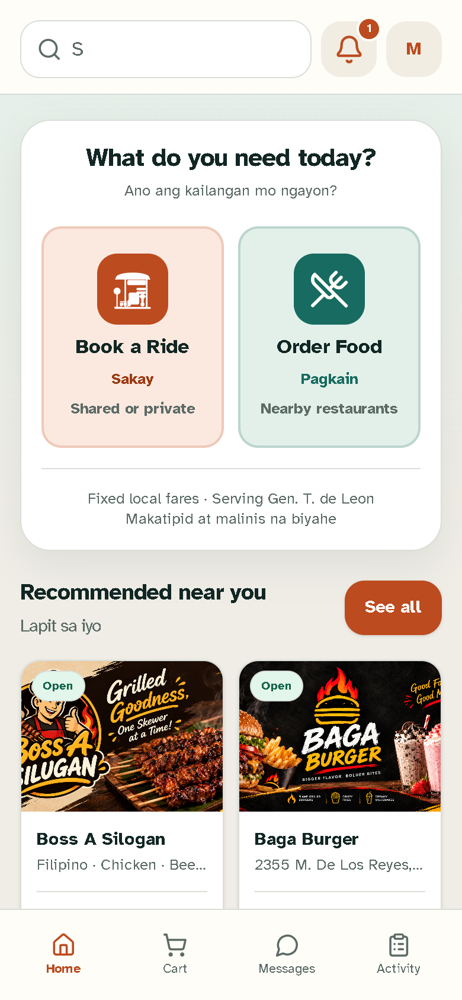
Customer homeTap the ride or food service card to begin. If prompted, confirm the pickup or delivery location before continuing.
01
Book a ride
Open the ride booking option.
Choose your pickup and destination.
Review the available ride details and fare shown.
Confirm your request and follow its status in Activity.
Use the location pin carefully. Confirm pickup and drop-off details before submitting.
02
Order food
Open the food section and choose a restaurant.
Browse its menu and select an item.
Choose any available options and add it to your cart.
Review the cart, delivery details and total, then place the order.
Restaurant availability, menu choices and order progress are shown in the app.
03
Track activity
Use Activity to review your ride and food requests and check their current status. Open a relevant item for more details when available.
04
Messages & account
Use Messages to view conversations available to your account. Visit Account to review or manage your profile information, then sign out when you finish on a shared device.
Food ordering, step by step
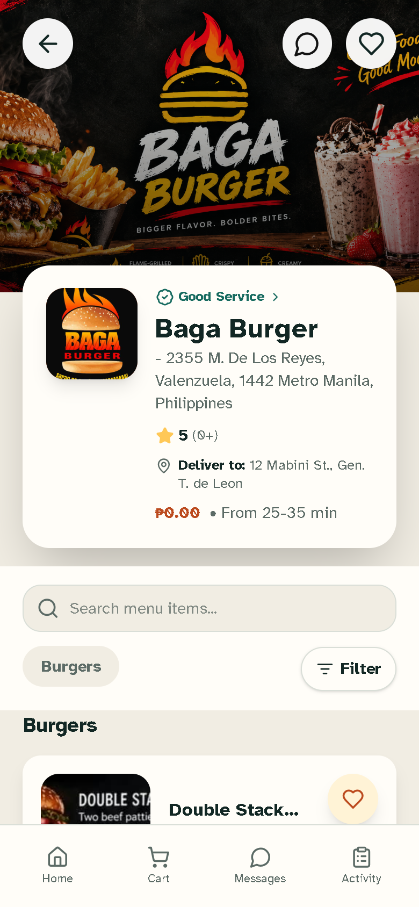
Pick a restaurantTap a restaurant card to open its menu and shop details.
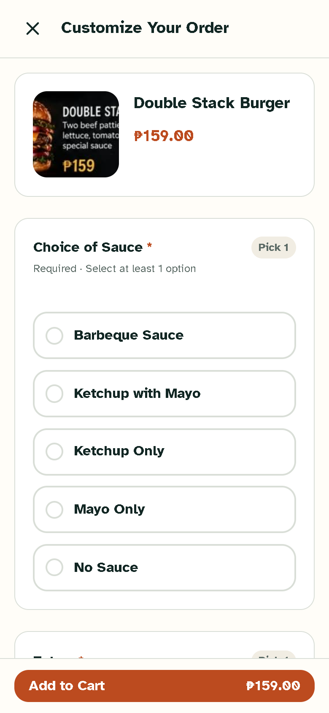
Choose item optionsSelect the available item options shown, then tap Add to Cart to continue.
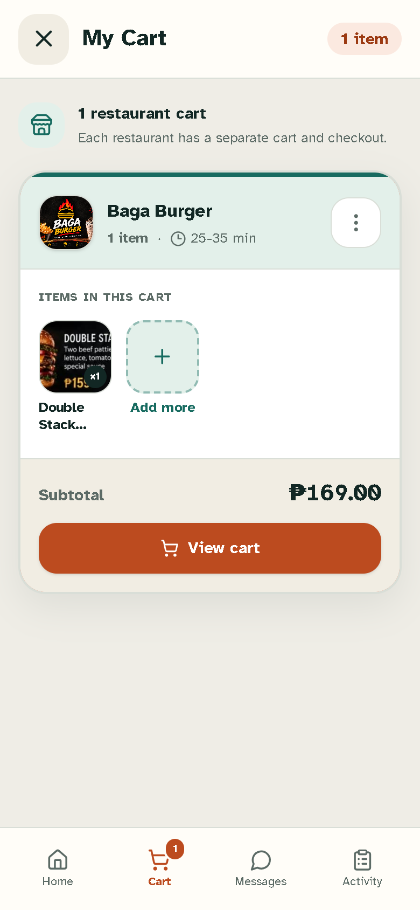
Review your cartCheck item quantities, delivery details and total, then use the checkout/place-order button shown.
Follow your activityOpen Activity, then select the ride or order card to review its status.
Ride booking
Set up your tripEnter pickup and destination in their location fields, review the fare/details, then tap the ride request button.
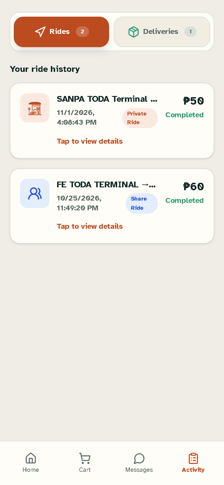
Check ride statusOpen Activity and select your ride request to view its latest status.
Before submitting a request
Pickup/delivery point and destination/address are correct.
Review the fare or order total and any item options.
Keep the app open and check Activity for status updates.
Keep your phone charged, confirm your vehicle and driver details are current, and only accept trips you can safely complete. Follow local TODA procedures and applicable traffic rules.
FOR APPROVED LOCAL SHOPS
Business guide
Keep your shop information and menu up to date, then manage incoming customer orders.
Approval first
Business accounts require administrator approval. If your shop is pending, use the customer workspace while you wait, then contact an administrator if you need a status update.
Set up and run your shop
Open the business dashboardReview the shop overview and any order or setup prompts.
Check your business profileConfirm your business name, address and other visible details are accurate.
Maintain your menuAdd or update the items and options your shop offers. Check names, descriptions and prices carefully.
Monitor new ordersOpen Orders to review incoming requests. Follow the in-app workflow to progress each order.
Keep availability realisticMake sure the menu and order status reflect what your shop can prepare and fulfill.
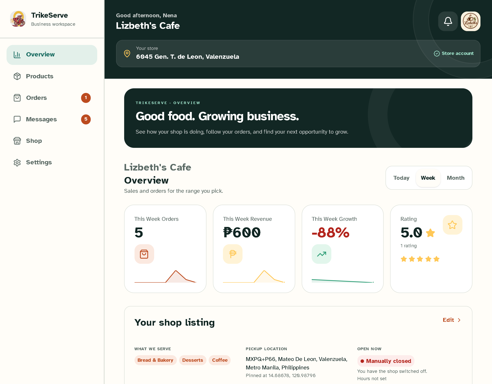
Business dashboardReview the order summary and shop status; use the dashboard’s order/menu controls to continue.
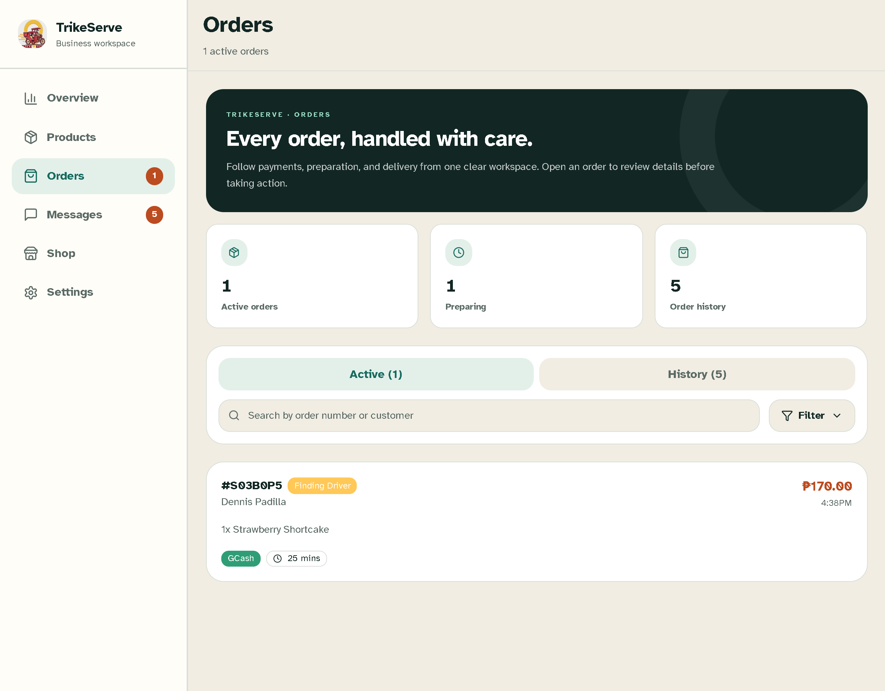
OrdersOpen an order card to review its items and details, then choose the available status action.
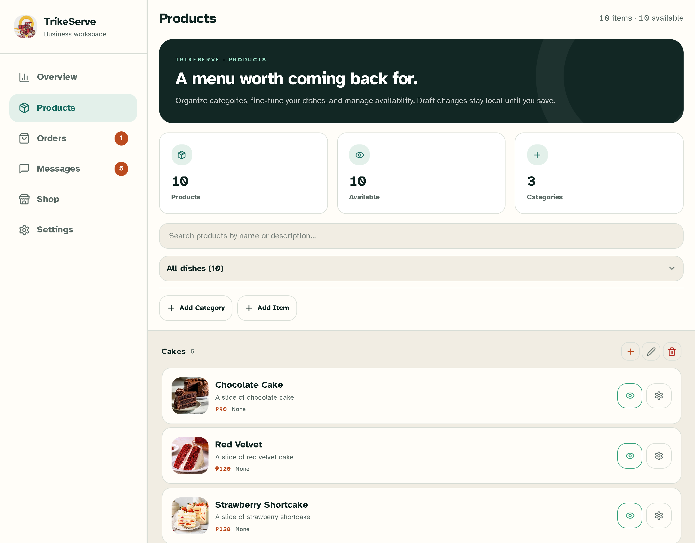
Menu managementUse the menu controls to add or edit an item; verify its name, price and availability before saving.
Opening checklist
Check that your shop profile and address are accurate.
Review menu prices and item availability.
Check incoming orders regularly and update their status in the app.
Review item availability and prices regularly. If an item can’t be prepared, update its availability promptly and follow the app’s order handling steps.
FOR AUTHORIZED OPERATORS
Administrator guide
Manage access and operational settings with care. Available controls can vary by administrator assignment.
Use administrator access responsibly
Only authorized staff should use administrative tools. Confirm the account and record you intend to change before saving. Some driver administrators are limited to their assigned terminal.
Common admin tasks
A
Review overview
Use the overview to orient yourself and see the operational information available to your account.
B
Manage users
Find user accounts and review the information available in the user-management area.
C
Handle approvals
Review driver and business applications and approve only when the required checks are complete.
D
Maintain TODA settings
Use the terminal, fare and settings areas for the operational controls assigned to your role.
Before making a change
Confirm your assigned terminal and administrator scope.
Review the target account or setting before editing.
Verify the saved result in the relevant list or overview.
Confirm your scopeCheck which terminal and admin tools are available to your account.
Review pending approvalsValidate submitted details before changing an application’s status.
Make deliberate editsReview fares, terminal records and settings before saving, especially when changes affect multiple users.
Verify the resultReturn to the relevant list or overview and confirm the change appears as intended.
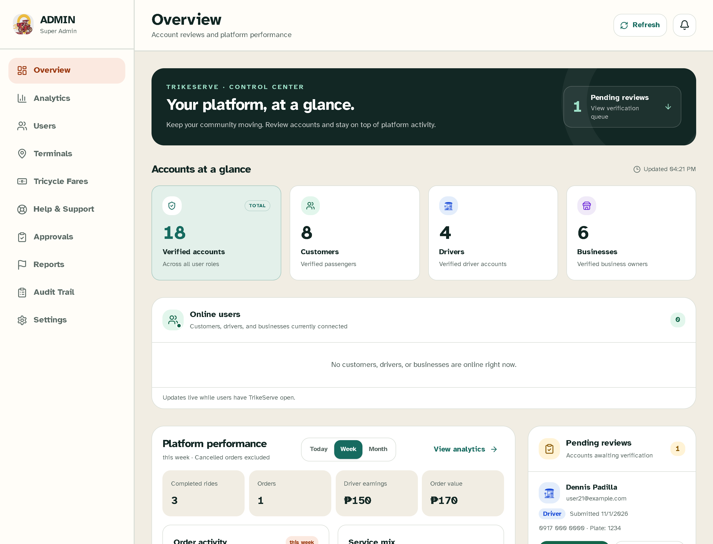
OverviewUse the overview cards and navigation to open the administration task you are assigned.
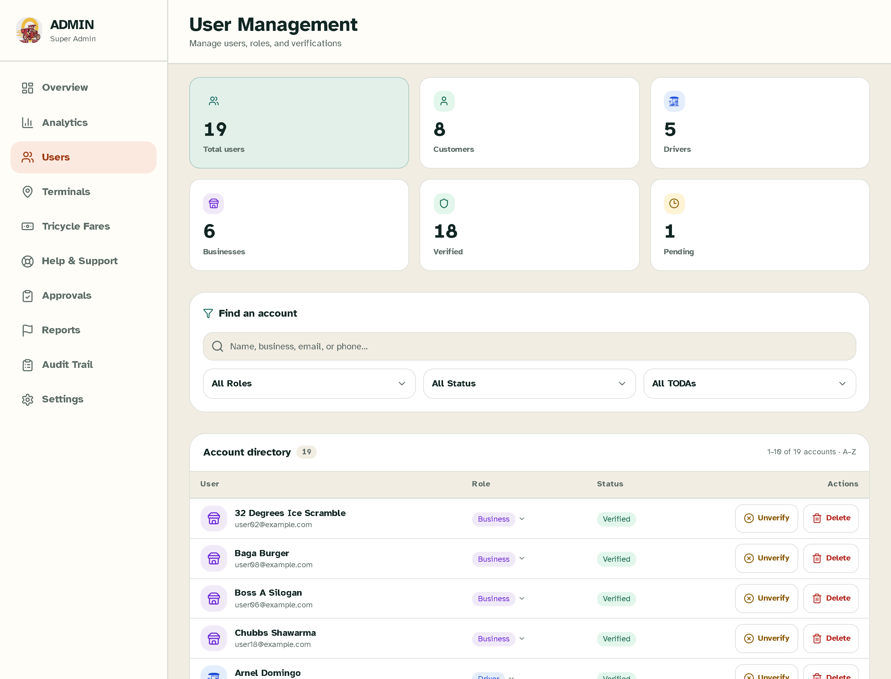
UsersSearch or select a user row to review the account; check the role and identity before editing.
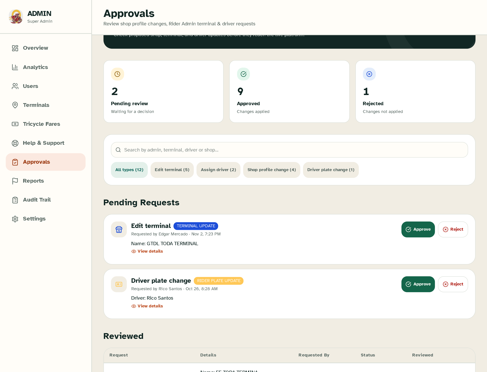
ApprovalsOpen a pending application, verify its submitted details, then use the approval action only when checks are complete.
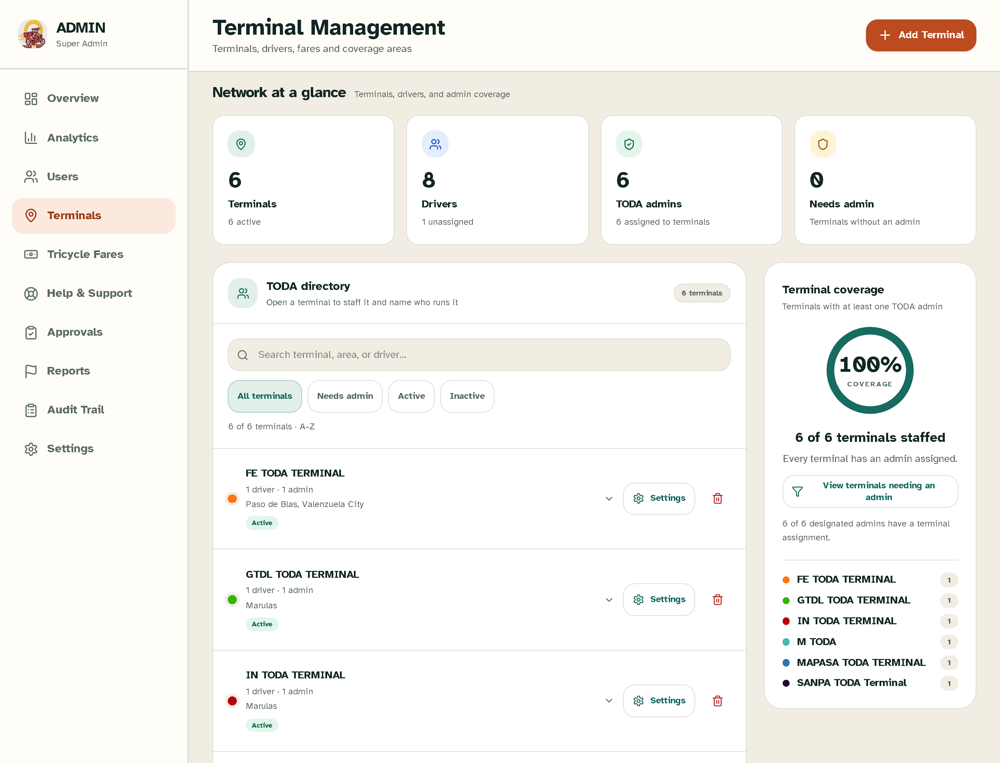
TerminalsSelect the assigned terminal and review its details before making permitted changes.
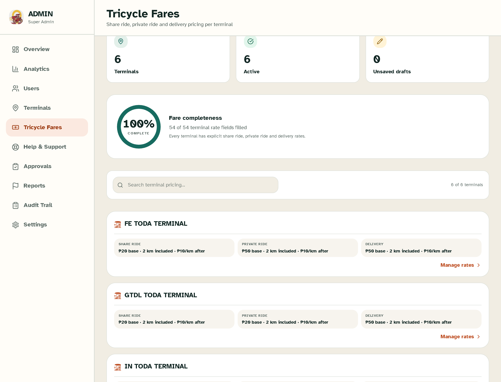
FaresReview the fare fields and values carefully, then save and confirm the displayed result.
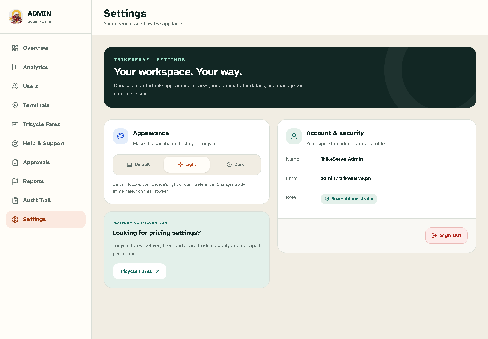
SettingsChange only settings assigned to your scope; review the selected values before saving.
HELP · QUICK FIXES
Troubleshooting
Try these checks first. If it still doesn’t work, contact your TrikeServe/platform administrator.
Location permission or map is not working
Open your browser or device settings and allow location access for TrikeServe.
Return to the app and reload the page or reopen the ride screen.
Check that your device location service and internet connection are on.
If permission is unavailable, enter or adjust the location manually where the screen allows it.
Only share location while using features that need it.
I did not receive an email verification message
Check that you entered the correct email address.
Check Inbox, Spam/Junk, and any filtered folders.
Use the resend option on the sign-in screen, then wait a few minutes before trying again.
If the address is wrong or the message still does not arrive, contact support/admin for help with the account.
Never share your password or verification code with anyone.
Driver or Business approval is still pending
Sign in with the same email used for the application.
Pending accounts may be sent to the Customer workspace; this does not necessarily mean the application was rejected.
Contact a platform administrator to check the application status and whether details are missing.
After approval, sign out and back in if the dedicated workspace does not appear.
Administrator access is assigned; it is not activated by a public sign-up.
A ride request failed or is not showing
Check your connection, pickup and destination, then retry once if no request appears in Activity.
Open Activity to see whether the request was created or its status changed.
If the request appears pending, avoid submitting duplicates; refresh and check again.
If it repeatedly fails, note the time and any on-screen message and contact support/admin.
An order failed, is delayed, or has the wrong details
Check the cart, selected options, delivery address and displayed total before placing the order.
Open Activity and check whether the order was placed before trying again.
For a placed order, use the order details or in-app messages if available; do not create a duplicate while its status is unclear.
Contact the shop or platform administrator with the order details if the issue remains.
When contacting support
Include your account role, the approximate time, what you were trying to do, and the exact on-screen message. Do not send passwords, verification codes, or payment credentials.
Use the in-app help/contact option if available, or ask the TrikeServe/platform administrator for Gen. T. de Leon.
06 · TAKE CARE
Safety & account tips
A few small habits help keep your account and community safer.
Protect your sign-in
Use a password you don’t share. Sign out on shared or public devices and don’t leave a logged-in screen unattended.
Check trip and order details
Confirm pickup, destination, order contents and totals before sending a request.
Use location thoughtfully
Location access supports map and nearby features. If you deny it, some location-based workflows may need manual input or be limited.
Keep information current
Update contact, shop or driver information when it changes. Contact an administrator for account-access or approval issues.
07 · QUICK ANSWERS
Common questions
If these steps don’t resolve it, contact your TrikeServe administrator.
Why do I see the customer home instead of my driver or business dashboard?
Driver and business roles need administrator approval. While approval is pending, TrikeServe routes the account to the customer experience. Ask an administrator to check your approval status.
I can’t sign in. What should I try?
Check your email and password, then use Forgot Password? if needed. If the app asks you to verify your email, check your inbox and spam folder and use the resend option shown on the sign-in page.
Where can I see the status of a ride or food order?
Open the customer Activity area and select the relevant request to review the status and details available.
Why can’t I see every administrator option?
Administrative tools depend on your assigned role and scope. Driver administrators may be limited to their assigned TODA terminal. Contact your super administrator if you believe access is incorrect.
Location or map features aren’t working. What can I do?
Check that location permission is enabled for your browser or device and that your connection is available. You can also enter or adjust locations manually when the screen allows it.